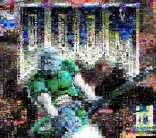
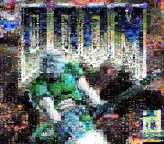
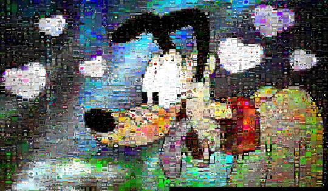
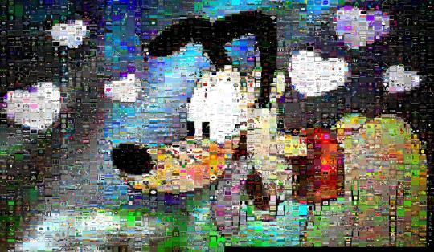
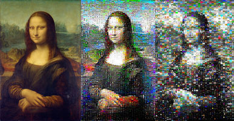
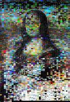
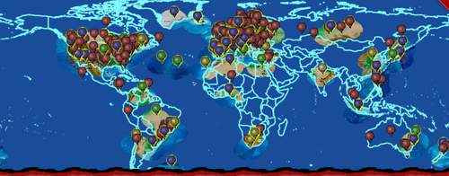

Ludum Dare #35 Mosaic
Its becoming a Ludum Dare tradition that I make a mosaic for each competition. I didn’t enter this time, but I still made a nice mosaic:
Always loved programming - its like Lego without gravity.
Basic on my ZX81 graduating to assembler and Turbo Pascal during my teens.
Developed phone OS software - engineer, architect, product manager - but got made irrelevant by the iPhone and redundant by Android.
These days I mostly work with data, big data and fitting big data onto small boxes.
Its becoming a Ludum Dare tradition that I make a mosaic for each competition. I didn’t enter this time, but I still made a nice mosaic:
Aurel Bílý made this nice wallpaper, and told
us how he did it:

Here are a couple of mosaics I made from the LD32 thumbnails:
 

(On the left, a target image. On the right, a mosaic made from thumbnails of all the Ludum Dare 32 games, positioned using an MSE score metric.)
Making mosaics is in two steps:
The second part is easy (although I tried imprecise approximations at first, and only discovered it fairly recently): use the Hungarian Algorithm.
Its that first step that’s tricky.
I have been using Mean Square Error (MSE) and have been fairly happy with the result. But readers have pondered if there aren’t better metrics that better account for shape and contrast and such…
So to please some Ludum Darers (and because I was curious), I tried out some algorithms.
First, Peak Signal to Noise Ratio (PSNR) is just a rephrasing of MSE and the results are much the same.
Second, I tried Structural Similarity (SSIM) index. This was a promising avenue to explore. My mosaic maker is Python and there’s a scikit helper, but scikit doesn’t work with pypy (and neither does a stock numpy; trying to get the mosaic maker to work happily in pypy with these kinds of dependencies has been a nightmare). In the end I went with pyssim which turned out to not work in pypy either due to dependencies but I stuck with it on cpython anyway. Its about 4x slower than MSE and most of the cost seems to be comparison overhead and not really affected by how big the patches I compared were.
SSIM is actually working in luma (eh fancy term for grayscale) and trying to account for shape not colour.
The results:
(On the left, the original. In the middle, MSE. And on the right, SSIM. Tiles are the thumbnails of 2819 Ludum Dare 32 games (omitting 2 games with broken thumbnails!))
So I tried blending the MSE and SSIM scores (suitably scaled of course) but couldn’t get even a little bit of SSIM to help:
(Here 70% MSE and 30% SSIM. I even tried 8% SSIM and it looked much the same.)
I also tested using the YCbCr colour-space too; results were much the same (as all the tiles are screenshots they are invariably natively RGB; if the tiles were made from photos there’s a good chance that YUV makes much more sense).
Now I am making a novice interpretation of this but my guess is that in mosaics, which are best viewed from a great distance where the tiles are increasingly pixel-sized, tile colour dominates over shapes within the tile?
By far my best score ever! Over 1000 other Jam entries, and I got Silver for Innovation and 4th for Theme! Really really so so very very pleased about this! :D

In other news, Notch sells Mojang to Microsoft and goes “back to doing Ludum Dares and small web experiments”!
As my game scrapes the LD30 game contest entries, I get to gather a lot of stats about who comments on whom. And, I believe, comments are a good proxy for playings and ratings.
We’re over a week into the 3 week voting time, and already the activity on the site has dropped significantly.
Here’s the comments over time (PDT):

The high peaks are at 12 noon each day; it seems people play and rate in their lunch hours! Even as the number of comments per hour drops steadily, it still has a local maximum at 12 noon each day.
I know I play, rate and comment during my lunch breaks … but I’m not in the PDT timezone.
In fact, I have the supposed location of 617 players so far so I could actually do an ok job of determining the local time they comment, and perhaps its not their lunchtimes? I may do this…
I was expecting the comment rate to pick up again at the weekend, but seemingly not.
The top-10 commented-on games are:
212 Close Your Eyes - nonetheless
187 Heart Star - AdventureIslands
175 Connecting LD30 to the Real World - Will Edwards
136 Starpiercer - Schrodinger Games
I updated my mosaic script to consider rotations of three tiles as well as straight swaps. To be honest, its diminishing returns, but the mosaic is one of the prettiest yet:
Ludum Dare is a really popular game making contest. Three or so times a year several thousand competitors all over the world wait for the theme to be announced and the contest to start!
Last weekend was the 30th contest (LD30) and the theme was “Connected Worlds”.
The voting wasn’t even close, which is a shame as I was very lukewarm to the theme. I feared there’d be lots of platform games where you run two levels in parallel, or can swap between levels, etc.
And that’s what 90% of games are, sadly. I don’t mean they are bad games - many of them are really exceptionally good! - I just mean the theme lent itself to a very literal interpretation.
My interpretation was to try and connect Ludum Darers to the real world instead :)
I recalled that hidden away on the LD website was a map where LDers could record their position on a map. It was not terribly well known, but there were several hundred player’s latitude and longitude in there. It was enough to make sure that any map wasn’t completely empty for the first player…
So I made a ‘game’ where you report your position, and then see other contestants near you and can browse LD games on the real world map.
The game aspect is the gamification of rating LD games. In order to discover the overall LD winner, contestants play each other’s games and rate them. They have 3 weeks to do this, and then the standings are announced. And I wanted to encourage that participation, as there’s really games that go unplayed and contestants that don’t play.
I scrape the LD website and, as a proxy for rating others games, I note who has commented on whom. As well as rating games you can comment on games, and whilst these are distinct they are often done together.
So I draw the map with line art, and use a GL stencil buffer to expose an underlying map where you’ve commented on games or others have commented on your game:

Play it online here! If you’re not an LD player, you can pretend to be!
The map that you expose is illustrated by me and the usual suspect, who goes by the handle Wombatica on the LD site.
I’ve been overwelmed by the popular appeal and compliments! I hadn’t expected to get so many appreciative LDers! I’ve been rated over 150 times already, which is many times the ratings I’ve received on previous contests. People keep coming back, and people keep checking progress.
People are saying the nicest things too! Here’s some of the over-the-top ones :)
- WOW. Now that is original. Genius. I’ll be playing it for the next few weeks.
- Hah, what an awesome idea, gamification of Ludum Dare! This it how I’m going to vote all entries from now, keeps voting fun!
- Thumbs up for innovation/originality!
- super awesome idea, have all my stars!
- Now the fourth wall have been shattered. thank you.
- Will - really, really good job… This should win I think, just for the sheer cheek of subverting the idea and pointing LD at itself, can see this becoming a favourite interface for LD in the future… very great !
- You made playing games a game, that’s a 5 stars on innovation, no doubt. Also, connecting the LD world with the real world… Another 5 stars for theme!
- Man. This is SO neat! This game wins like all of the LDs. Amazing job!
- I gave you an award on your profile for this game.
- Oh my god this is briljant!
Oh there’s more. Lots more :) Now excuse me while I float off ecstatically tired…
 As
followers of the blog know (thx for the mails!), I’ve been making mosaics of Ludum Dare contest entries.
It started
basic,
and its got better.
Each of the ‘pixels’ in the Mona Lisa is actually a screenshot of a game! Here’s
how:
As
followers of the blog know (thx for the mails!), I’ve been making mosaics of Ludum Dare contest entries.
It started
basic,
and its got better.
Each of the ‘pixels’ in the Mona Lisa is actually a screenshot of a game! Here’s
how:
We have an target image, for example the Mona Lisa, and we have some large number of small input images which we want to arrange so that, when squinted at from a distance, it approximates the target image.
UPDATE: blog post describing how these mosaics are made
I knew my mosaic script was doing a poor job of placing the images.
The approach it’d be taking was greedy: it’d place the closest matching image on its tile, and then the next closest matching and so on. The outcome in in the middle column above.
After talking a bit with Roy, I couldn’t really leave it doing such a poor job.
So in what way is the greedy approach sub-optimal? It may be that swapping two images or three or more images around will lead to a lower overall error score.
And what’s the simplest improvement to make? Rather than tackling the true dynamic programming or other classic approach to optimisation, I simply went for random swaps.
The script will now perform random swaps if they improve the image, until you interrupt it with ^C.
And the results, as seen in the left column above, are stunning :)
The mosaic is made (sourcecode) from the screenshots from Ludum Dare 29, to the theme “Beneath the Surface”. The green turtle is from wikipedia.


The results are just in, and I didn’t do so well. Again.
Looks to me like my Ludum Dare game making contest scores are converging on mediocre :|
Not a terribly bad likeness? (My code made the top one ;)
Its the over 2000 thumbnails from Ludum Dare 28 (my game entry), placed greedily by MSE. Here’s a little Python script I quickly knocked up.

Last week I discovered csg.js - Constructive Solid Geometry (CSG). Its a super clean, super neat library that can take an arbitrary non-self-intersecting meshes made from convex polygons and do boolean operations on them. Like firing cylinders at cubes, as in this video I just made :)
(The white lines are drawn per two vertices, and triangles have three, and this explains why there are lines over holes sometimes. But it gives a very good idea of how many triangles we are talking about once we have to start splitting.)
BSPs are not the most efficient way to do this, and the code is horribly slow. Its doing a super-non-trivial thing though, and the code is designed to be descriptive and informative rather than fastest. One of the key tuning point of a BSP is picking the early splitting planes.
So I’ve tweeked the code to split the meshes into octrants, and this makes a massive speedup in my tests. Of course its far from optimal; picking splitting planes is a hard problem.
We’ll see how I can adapt this mechanic to this weekend’s Ludum Dare competition… the theme being “You only get one”, which is a damp limp squid of a theme if you ask me.
To: All secret agents
From: NSA training directorate
Subject: how-to use the NSA’s Cyber Remote Analyst Portal
Security: TOP SECRET
Play: my game!
As a key part of my Ludum Dare entry The NSA’s Where’s Snowden? game I wanted you - the elite NSA Analyst - to be able to hack the game world. Imagine you could put your agents onto flights, or fiddle with the flight manifests so that targets were refused boarding or even arrested… and how would you do this? I decided I wanted you to have SQL access to the world’s flight plan database…
SELECT T.* FROM MANIFESTS AS M, MANIFESTS AS M2, TARGETS AS T WHERE T.PASS = M.PASS AND M.PASS = M2.PASS AND M.FLIGHT = ‘AF-321’ AND M2.FLIGHT = 'IB-794’;
But I couldn’t find any working SQL engines for Javascript! I didn’t find the emscripten SQLite. The only thing I could find was TrimQuery, but I couldn’t get it to work and its quite old and not actively developed. There’s are also a few LINQ-likes but they are not really SQL.
Now SQL is the lingua franca of structured data querying so I was surprised at this sorry state of affairs. Whilst LINQ is nice (because of the VS tooling!) I feel that a lot of the LINQ-likes are driven by hipster cargo-culting and that a solid SQL that can query conventional JS objects and arrays would be a powerful and useful thing.
So I set out to build an SQL engine in Javascript (sql.js). It was perhaps more fun to develop than the other parts of the game and more fun to examine than the game is to play :) It amazes me what I got working in ~4 hours and under 500 lines of code. This blog post describes how it works (and how it can be done better):
How to use sql.js
It consists of a single function SQL(). The parameters are:
the SQL statement, e.g. “INSERT INTO …”
the definition of the tables, which is a Javascript object acting as a dictionary.
Each table is itself an object, detailing the column names and specifying any constraints on them (e.g.
if they must be unique or can be null) and optionally a description. E.g.
{
airports: { code:{description:“IATA code”,unique:true,notNull:true,},
name:{notNull:true,}, country:{notNull:true,}, category:{description:“level of CIA
infiltration”,}, lat:{description:“latitude (decimal degrees)”,},
lng:{description:“longitude (decimal degrees)”,}, }, airlines: {
code:{unique:true,notNull:true}, name:{}, country:{}, },…
table access; an object where each table name that the user can update has a boolean
e.g.
( airports: false, flights: true,…
Any table name that is omitted is read-only.
The data; an object where each table is a key and each table is an array of objects
e.g.
{
airports: [
{code:“LHR”,name:”London
Heathrow”,…
],
manifests: [
…
params. This object allows you to override things like setting the default row count
LIMIT.
If the SQL cannot be parsed or if the table data does not have the expected fields then it throws an Error() exception.
Otherwise it returns an object with a columns key and a rows key. The columns are an array of strings which are the column titles. Rows are an array of arrays.
Parsing SQL
To parse a language you often use a parser generator like lex/flex yacc/bison. There are parser generators for Javascript too - jison and peg and so on - but I haven’t used them and, to be honest, its quicker to just write our own parser from scratch.
To parse SQL we can eat the statement a token at a time. A token might be a number, an identifier or a symbol like an opening brace.
Normally when I hand-roll a parser - its a bit of a recurring hobby of mine - I write the tokeniser to see what the next character is, and then based on whether that is a number, a quote mark or the beginning of an identifier or so on loop through until the token closes. In sql.js however, I took a messy shortcut.
When asking for the next token, I pass into the tokeniser the list of terminating strings e.g. when consuming table names in a FROM clause I’d ask for the next token (which I expect to be a table name) which can be followed by a comma, the word AS or the word WHERE or a semi-colon. If my engine supported it, I could just add those additional possible keywords that follow a table name in the FROM clause e.g. ORDER, LIMIT and HAVING and JOIN and so forth.
This meant that the next() function only had to do a Javascript string search - indexOf() - to find the nearest terminator. However, this approach does have limitations e.g. it doesn’t properly parse strings (if the terminator occurs in the string the indexOf() will incorrectly find it) and words that contain keywords (the Airport table namehas OR in it, for example). By the time you’ve added code to address this, you end up with a proper tokeniser anyway. So in hindsight I should have doubled my line-count and just gone with a classic tokeniser in the first place.
Executing SQL
Once the query is parsed and the array of table names built and, its just to execute the query. And this is surprisingly simple using the Cartesian Product. If table A had two rowsand table B had two rows then the Cartesian Product would be:
SELECT A.V, B.V FROM A, B;
A.V | B.V
1
| 1
1 | 2
2 | 1
2
| 2
No surprises there. But what if we add a WHERE clause?
SELECT A.V, B.V FROM A, B WHERE A.V = 2;
A.V
| B.V
2 | 1
2 | 2
We can get that by first generating the Cartesian Product - simple by iteration and recursion - and then filtering the rows by evaluating the WHERE clause against each line!
This is thoroughly inefficient. If there are 100 rows in one table and 100 rows in another then the Cartesian Product is (100+100)^2 = 40,000 rows! It would be much more efficient to evaluate - and cull - candidate rows as soon as possible e.g. before recursing into every B row first check if A.V is 2.
In the NSA game it’s easy to be evaluating a Cartesian Product that is hundreds of thousands long, and this can take several seconds.
The engine supports SELECT, INSERT, UPDATE and DELETE. It doesn’t support the JOIN keyword but it does let you join in the WHERE clause (as described above). It doesn’t support IN. It additionally has SHOW TABLES, DESCRIBE table and CHECK table which provide utility. Because of the needs of the game there is also some rudimentary access control so the ‘hacker’ can’t really hack - and break - the game itself e.g. rescheduling or deleting flights and other havoc.
I made the whole thing case-insensitive but that could easily be removed for data values and comparisons themselves.
I added support for literals but the only literal I added was ‘NOW’. I treated all dates as strings and this allowed simple Javascript string comparison of dates. I didn’t support any functions, but this would be very easy to add too.
Improving performance
A proper SQL query planner (the code that decides the order that table rows are evaluated) has to understand the cost of retrieving rows (from disk and so on), but in Javascript RAM access speed is fairly equal and without indices you need full table spans so its just to filter tables by the parts of the WHERE clause that reference them as greedily as possible.
Each table is an array of objects. It would be straightforward to support arrays of arrays, and objects of arrays and objects of objects. Using objects as the collections themselves would effectively be a primary key - an index! Knowledge of this could dramatically speed up joins.
The engine turns the incoming SQL into a chain of closures. TrimQuery, by comparison, turns the SQL statement into a Javascript fragment that is then eval()ed. I am not sure that is faster; doesn’t that cause the Javascript VM itself to abandon a lot of cached JITed code? But it may be faster to instead compile the SQL down to a simple VM.
If you are running the same query again and again it would certainly help to ‘compile’ or ‘prepare’ the SQL statement once and have a way to run it again and again against data
sql.js is surprising short given what it can do, and surprisingly simple. I found it easier to write SQL statements myself to work out what was happening in the model than to use array.filter() once joins were involved. With a better tokeniser and an expanded grammar and a simple query planner it could be widely useful.
sql.js is doubtlessly more interesting than actually playing the game ;)

For the Ludum Dare game jam this weekend I made a Snowden-themed game :)
You are an NSA Analyst and you have to move your agents onto flights to find Snowden and Assange as they try to reach safe havens.
Some people imagine that the NSA computer systems are fancy semi-transparent virtual displays projected onto glass panes and controlled with gestures and eye movements. Well, boy are they in for a surprise! The truth is the NSA is still stuck on Windows GOV edition, which is based on Windows ME. Clippy is in there too! And their IT department will soon start an upgrade of the mail system to Lotus Notes!

To be honest, the game is only for data junkies. And data junkies are the kind of people who’d like a more subtly balanced and tuned model underneath, which you don’t get from a one weekend project. So nobody is going to like it :/
The very cool bit is there’s a fairly reasonably useable full SQL parser and runner. You really can join across three tables, have simple expressions, do inserts and deletes and hack the international flight control databases…
The Ludum Dare theme was “10 seconds”, but if you want 10 seconds you can go play the 2000 other game entries that take the theme seriously instead!
My Ludum Dare 27 game entry is going to be you - the NSA “Analyst” - trying to corner Edward Snowdon for a bit of rendition.
I’m going to add a globe to it - a rewrite from my ICBM game entry for the “real world” mini LD:
So what do you imagine the NSA computer screens to look like? I’ve started with a retro Windows 95/ME look:

I’m about 4 hours of coding in, and I’m already getting nagging doubts about the visual style. Perhaps people will prefer a futuristic modern star-trek UI with lots of solid fill rounded corner borders and semi-transparency and transition effects?
Its 2 hours to go and I’ve not been able to sleep for hours. So I’ve been writing some ‘framework’!
And that framework turned out to be a little SQL parser and runner in … you’ve guessed it, Javascript!
It supports basic joins-in-the-where-clause, column and table aliases and insert statements (with constraints!).
It does type-coercion on insert in the same broken way that MySQL does.
So as you see, I really am picking the best of all worlds: Javascript + SQL + MySQL bugsfeatures… what’s not to love?
Maybe I have time to add DELETE and UPDATE before the LD starts and I need to work out some
game to use all this awesomeness on… 
Opening myself up here, but to be honest I’m deeply disappointed about our Ludum Dare game-making-contest score history. I expected more of us; we aimed higher, and we hoped to make something that would please and wow the crowd.

And we abjectly failed, again.
We’ve always aimed to challenge norms; in LD23 we’d tried to put graphics into text adventures in an interesting, new way. We’ve tried to enter a multi-player on-line game in LD24, and we’ve tried in LD25 to make a 2D platform game without tiles.
We really are overactive underachievers.
Our highest LD25 score was for music. We were perhaps not clear enough that that was the one
thing we had not ourselves made  It was a track we’d
picked up on the Internet, and we thought we’d explained that.
It was a track we’d
picked up on the Internet, and we thought we’d explained that.
So why did we fail so miserably? Bad control. We should have had a lot more and we lacked in plenty of areas, but I think that the playability was most affected by the bad control.
Its fairly non-trivial to do collision with arbitrary lines and so on, and do it efficiently too. Our collision code, which we’d written for the game and mostly as the deadline loomed, was immature and incomplete. We should of course have learned how to code it before the jam, or borrowed a library or something. But we’re not really borrowing-code-libraries kind-of-people.
And what happens is that you do badly in a core area such as control and people voting just give you a low score across the board. We got 1.92 for innovation which just means we hid the code well I guess.
I’m deeply saddened that we didn’t score higher for graphics, as I myself am in awe of my team-mate’s artistic prowess and thing it deserved more. A very big part of that is my fault, as I also didn’t get around to good GLSL lighting. Meaning the whole making the scene out of meshes thing didn’t work, and it was hard to see where the platforms were because of the uniform shading.
In previous LDs the winners have always wowed me. I’ve always looked down the winners list and been awed and inspired. This time its been a whole lot, well, distanced. I don’t mean to take anything from the winners and everyone else in on the game; I think its in a large part because I didn’t find the theme exciting.
We had had an alternative game that was a FarmRomanVilla thing; Zynga being villains and villain being a medieval French word for farm worker and all. All actually inspired by a recent episode of Time Team I’d watched where they excavated a Roman villa in Britain… But whilst that was very much the kind of game I like making, I think it would have disappointed just as badly as the lets-make-a-platform-game,-they-always-do-well game that we tried.
Its been a introspective start to the new year. Our strength is art and we do ok-ish at coding too, but general story and game-play, audio (we’re both terribly untalented musically) and overarching fun we fail miserably at.
I know I’m supposed to end on a high note of future optimism and enthusiasm and a promise to try harder and come back next time. But its hard to muster the bravado. Time heals, so maybe we’ll be back for another beating; we’ll see.
Introducing our game for the Ludum Dare #25 competition:
To think we made all this in just 72 hours?!
The theme for the competition was “you are the villain”.
We wanted to make a game that my young daughters could (be allowed to) play, which meant no blood and guts and swearing etc. It had to be tame, innocent fun. We settled on a very classic platform-game idea. If you ‘die’, you actually go to prison. Being cast as the baddie doesn’t mean you become a goodie, not when its made by a prudish dad like me!
The artwork is excellent as usual, due entirely to my co-conspirator, the usual suspect. The general engine - which I coded - whilst cool in that I made it from scratch, is not so great.
If there’s a criticism of the game-play its the wrong-feeling control system.
{kind=link}